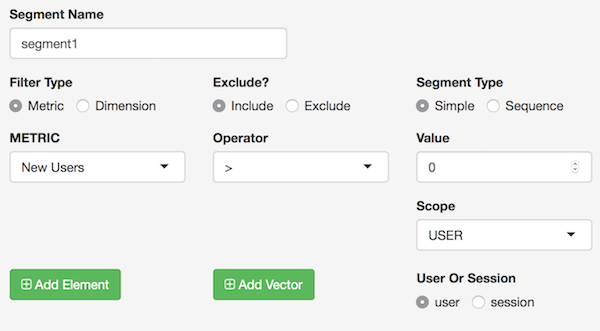

To use in Shiny with a multi-user login, use googleAuth’s with_shiny. See the googleAuthR readme for details on general Google authentication with Shiny.
A video tutorial on how to create a Shiny app with googleAnalyticsR is available below. The first 20 mins creates a basic Shiny app fetching data, the last 20 mins go into combining with other libraries and using custom HTML templates:
## in server.R
library(googleAuthR)
library(googleAnalyticsR)
library(shiny)
shinyServer(function(input, output, session){
## Get auth code from return URL
access_token <- callModule(googleAuth, "auth1")
gadata <- reactive({
with_shiny(google_analytics_3,
id = "222222", ## replace with your View ID
start="2015-08-01", end="2015-08-02",
metrics = c("sessions", "bounceRate"),
dimensions = c("source", "medium"),
shiny_access_token = access_token())
})
output$something <- renderPlot({
## only trigger once authenticated
req(access_token())
gadata <- gadata()
plot(gadata)
})
})
## ui.R
library(googleAuthR)
library(shiny)
shinyUI(fluidPage(
googleAuthUI("auth1"),
plotOutput("something")
))To aid with creating Shiny apps using this package, some Shiny modules are available.
Authentication modules
authDropdown and authDropdownUI create a row of selects to help with choosing a GA View.

Make sure to authenticate with at least https://www.googleapis.com/auth/analytics.edit scopes since this is needed for listing GA accounts.
This is useful in combination with googleAuthR’s googleAuth module that helps with user login:
## ui.R
googleAuthUI("login"),
authDropdownUI("auth_menu")
## server.R
(...)
token <- callModule(googleAuth, "login")
ga_accounts <- reactive({
validate(
need(token(), "Authenticate")
)
with_shiny(ga_account_list, shiny_access_token = token())
})
selected_id <- callModule(authDropdown, "auth_menu", ga.table = ga_accounts)
(...)Google Analytics 4 Account Picker
GA4 has different data model and account structure, so it has its own account picker module at accountPicker() - this also uses the more modern Shiny module style. GA4 only has accounts and web propertyId, not viewIds.
A minimal example on how to use it is shown below:
library(shiny)
library(googleAnalyticsR) # for accountPicker
library(googleAuthR) # for gar_shiny_ui
ui <- fluidPage(title = "Shiny App",
accountPickerUI("auth_menu", inColumns = TRUE))
server <- function(input, output, session){
token <- gar_shiny_auth(session)
accs <- reactive({
req(token)
ga_account_list("ga4")
})
# module for authentication
property_id <- accountPicker("auth_menu", ga_table = accs, id_only = TRUE)
}
shinyApp(gar_shiny_ui(ui, login_ui = silent_auth), server)Parameter selects
Universal Analytics
multiSelect and multiSelectUI create select dropdowns with the GA API parameters filled in, taken from the meta API.
 ### GA4
### GA4
Google Analytics 4 allows you to download your custom events, so needs a new metric/dimension field picker, available as metricDimensionSelect()
To use custom fields, you need to pass in meta data from ga_meta("data") with your propertyId.
An example of its use with and without custom fields is shown below:
library(shiny)
library(googleAuthR)
library(googleAnalyticsR)
gar_set_client(
web_json = "/Users/mark/dev/auth/mark-edmondson-gde-web-client.json",
scopes = "https://www.googleapis.com/auth/analytics.readonly")
# loads a pre-existing model
model <- ga_model_load(
"/Users/mark/dev/R/_packages/googleAnalyticsR/inst/models/ga4-trend.gamr")
modelUi <- model$shiny_module$ui
modelServer <- model$shiny_module$server
## ui.R
ui <- fluidPage(
title = "GA4 Shiny",
h1("GA4 Shiny App"),
accountPickerUI("auth_menu", inColumns = TRUE),
h2("Pick metrics and dimensions"),
metricDimensionSelectUI("mets1"),
metricDimensionSelectUI("dims_custom", "Dimensions"),
h2("Model results"),
modelUi("model1")
)
## server.R
server <- function(input, output, session){
token <- gar_shiny_auth(session)
ga_accounts <- reactive({
req(token)
ga_account_list("ga4")
})
property_id <- accountPicker("auth_menu",
ga_table = ga_accounts,
id_only = TRUE)
meta <- reactive({
req(property_id())
ga_meta("data", propertyId = property_id())
})
metrics <- metricDimensionSelect("mets1", default = "sessions")
dims_custom <- metricDimensionSelect("dims_custom",
field_type = "dimension",
custom_meta = meta())
# module to display model results
modelServer("model1", view_id = property_id, metrics = metrics)
}
shinyApp(gar_shiny_ui(ui), server)Segment helper
segmentBuilder and segmentBuilderUI creates a segment builder interface. This is also available as an RStudio gadget to help create segments more easily.

Example
An example of a Shiny app is shown below, that allows users to login in, select an account using the modules above, and then see their data via Highcharts
The code for the explorer is included below:
ui.R
## ui.R
library(googleAuthR)
library(googleAnalyticsR)
library(shiny)
library(highcharter)
shinyUI(
fluidPage(
googleAuthUI("login"),
authDropdownUI("auth_menu"),
highchartOutput("something")
))server.R
## in server.R
library(googleAuthR)
library(googleAnalyticsR)
library(shiny)
library(highcharter)
function(input, output, session){
## Get auth code from return URL
token <- callModule(googleAuth, "login")
ga_accounts <- reactive({
req(token())
with_shiny(ga_account_list, shiny_access_token = token())
})
selected_id <- callModule(authDropdown, "auth_menu", ga.table = ga_accounts)
gadata <- reactive({
req(selected_id())
gaid <- selected_id()
with_shiny(google_analytics_3,
id = gaid,
start="2015-08-01", end="2017-08-02",
metrics = c("sessions"),
dimensions = c("date"),
shiny_access_token = token())
})
output$something <- renderHighchart({
## only trigger once authenticated
req(gadata())
gadata <- gadata()
## creates a line chart using highcharts
hchart(gadata, "line" , hcaes(x = date, y = sessions))
})
}